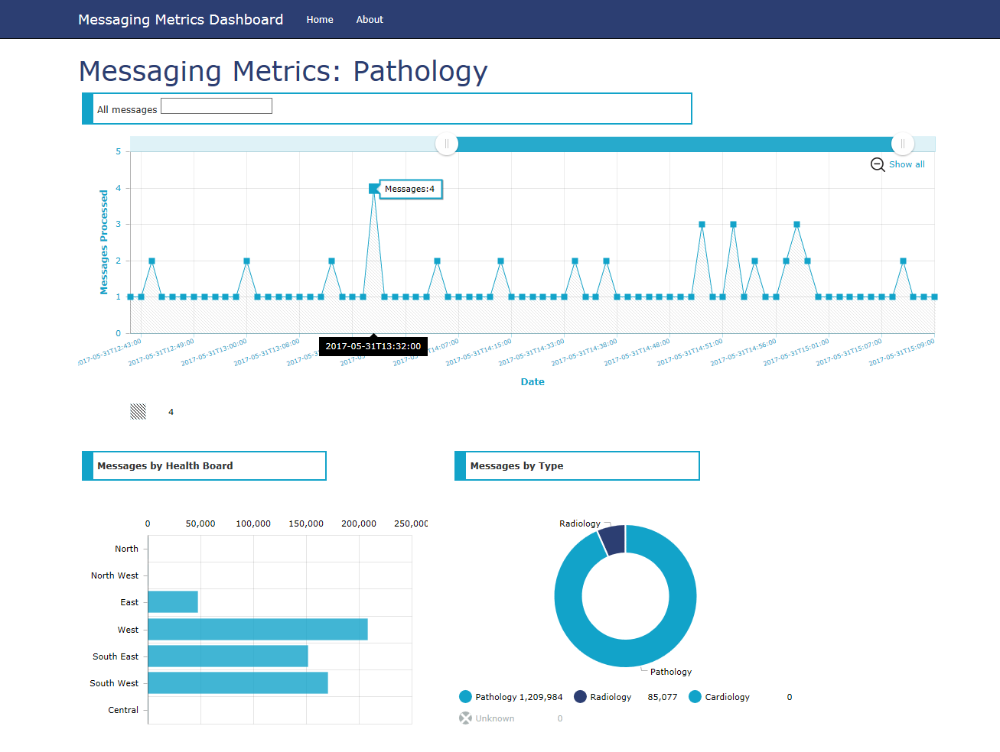

// Clinical Projects
Dashboards
// Test Automation //
Using Microsoft's Coded UI Test libraries included with Visual Studio Enterprise, and a little understanding of C#, I was able to deliver a test automation capability to a clinical applications development organisation. The timeframe for regression testing a large clinical application, which had to be repeated with each release, was reduced from several weeks to several hours. Quite often an automated test run would be used to detect functional defects before commencing a lengthy period of manual testing. Another advantage of test automation is consistency: The same set of tests are applied to each build or iteration of the application under test.
Test automation is'nt without its disadvantages. A typical test script would consist of several thousand lines of C# code, and scripts needed to be managed as software projects. A test automation system also isn't as flexible or adaptive as a human tester, and the code frequently requires changes just as often as the application under test, and, of course, this requires some amount of expertise in programming.
// Web Services //
Used for passing of data between several nationally-deployed clinical systems. The Web Service architecture followed the SOLID principles of software design, being loosely coupled across five layers:
 The API repository is a .asmx file containing all the entry points for our collection of Web services. With some Web Services the helpers (the executable part of the service) are in the same file, but they can be separated out into a different .cs file.
Requests are passed to the relevant Web Service helpers, which are coded in C# to perform whatever operations. The data access layer for a typical Web Service is broken down into three sub-components that collectively form a response populated by data objects.
Testing and debugging was performed using SoapUI.
The API repository is a .asmx file containing all the entry points for our collection of Web services. With some Web Services the helpers (the executable part of the service) are in the same file, but they can be separated out into a different .cs file.
Requests are passed to the relevant Web Service helpers, which are coded in C# to perform whatever operations. The data access layer for a typical Web Service is broken down into three sub-components that collectively form a response populated by data objects.
Testing and debugging was performed using SoapUI.
- API repository
- Web Service helpers
- Data access layer(s)
The API repository is a .asmx file containing all the entry points for our collection of Web services. With some Web Services the helpers (the executable part of the service) are in the same file, but they can be separated out into a different .cs file.
Requests are passed to the relevant Web Service helpers, which are coded in C# to perform whatever operations. The data access layer for a typical Web Service is broken down into three sub-components that collectively form a response populated by data objects.
Testing and debugging was performed using SoapUI.
// Messaging Dashboard //
Uses:
 The Messaging Dashboard interprets and displays the contents of Service Broker's error and duplicate message queues, enabling the system administrators to more quickly determine the cause of message processing failures. Selected messages could be deleted, resubmitted or moved between Service Broker queues.
The Messaging Dashboard interprets and displays the contents of Service Broker's error and duplicate message queues, enabling the system administrators to more quickly determine the cause of message processing failures. Selected messages could be deleted, resubmitted or moved between Service Broker queues.
- ASP.NET MVC 5
- Entity Framework
- Service Broker and Stored Procedures
The Messaging Dashboard interprets and displays the contents of Service Broker's error and duplicate message queues, enabling the system administrators to more quickly determine the cause of message processing failures. Selected messages could be deleted, resubmitted or moved between Service Broker queues.
// Messaging Metrics Dashboard //
This ASP.NET MVC 5 application displays graphs showing the number of messages processed by a) Total Message Volume, b) Messages by Organisation, and c) Messages by Type.
The application works from an Entity Framework model that includes the stored procedures and data objects sent/returned. The stored procedures are called by Web API controllers that return JSON responses to the View layer. In the View layer, JavaScript charts are rendered from the JSON response data.

Uses:
- ASP.NET MVC 5
- Entity Framework
- amCharts and Chart.js